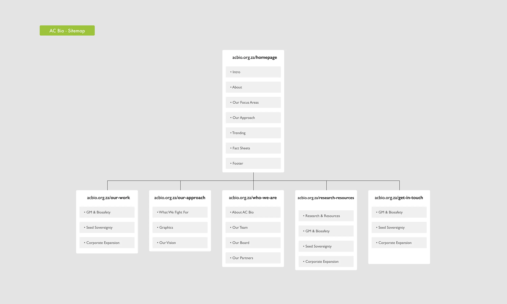
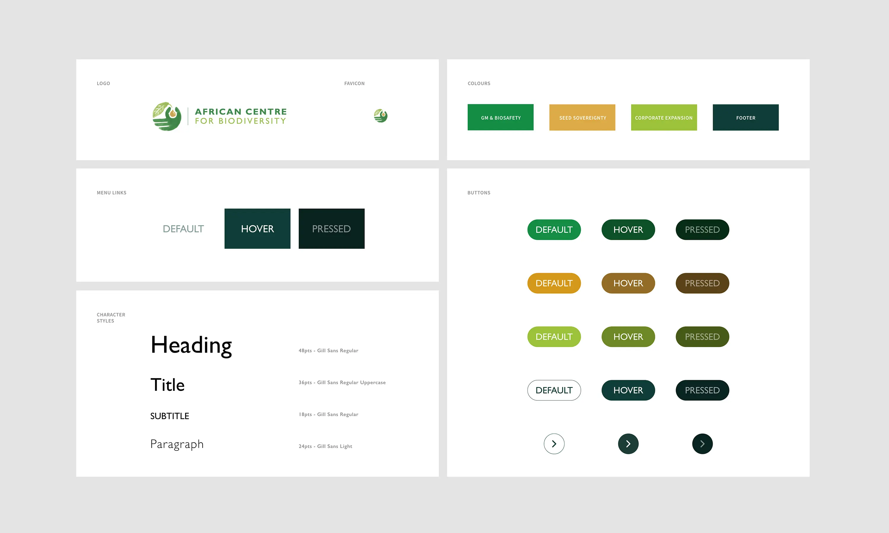
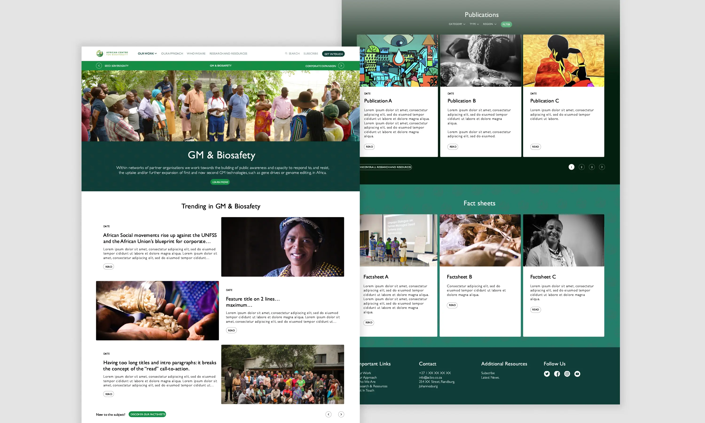

AC Bio
UI-UX Design
African Centre for Biodiversity
AC Bio is a research and advocacy organisation working towards food sovereignty and agroecology in Africa, with a focus on biosafety, seed systems and agricultural biodiversity. They are committed to dismantling inequalities and resisting corporate-industrial expansion in Africa’s food and agriculture systems.
Brand new website
Partenaring again with PURE Creative Agency, I got the chance to revamp the UX and UI of their website (which didn't change in a long time). Starting from scratch on my notebook, we draw a new sitemap for the whole architecture before suggesting 3 landing pages with different look-and-feels (typographies, colours, etc). Once the client satisfied, we built a UI kit based on the chosen landing page and then applied the style to every wireframes, turning the latests into UI layouts ready to be coded. The next step, front and back-end development was made by Flint Studio.Year
June 2022
Lire en Français 🇫🇷